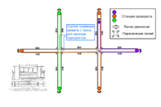
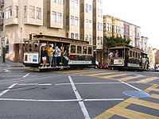

Канатный трамвай, (устоявшегося русского термина не существует) — вид рельсового транспорта, близкий к фуникулёру.

Одна из возможных схем движения канатной железной дороги
С фуникулёром канатную железную дорогу и трамвай роднит то, что двигатель расположен вне вагона, привод осуществляется через трос от расположенного статически двигателя (в наши дни — обычно электрического, ранее использовались паровые машины). В отличие от фуникулёра, вагон канатной железной дороги и трамвая не прикреплён намертво к тросу — закрепление осуществляется при помощи специального захвата. Таким образом, вагон может останавливаться независимо от движения троса и других вагонов.
Вагоны канатной железной дороги способны преодолевать крутые подъёмы, что, в сочетании с их относительной автономией (возможность останавливаться независимо от движения троса и других вагонов) привело к тому, что в городах с холмистым рельефом они выполняли роль уличных трамваев.

Канатные трамваи в Сан-Франциско
Канатные трамваи были популярны в первую очередь в США на рубеже XIX—XX веков. Вагоны по внешнему виду практически не отличаются от обычных трамвайных. Они движутся по улицам общего пользования, в связи с чем трос уложен в расположенный между рельсами жёлоб. Преимуществами таких фуникулёров по сравнению с трамваями была их способность преодолевать крутые подъёмы. Однако невозможность регулировать скорость и некоторые другие недостатки привели к их практически полному исчезновению. До наших дней сохранился только самый первый такой трамвай на канатной тяге, запатентованный Эбнером Даблдеем и построенный в Сан-Франциско.
В конце XIX века также предпринимались попытки создания городского внеуличного транспорта на этой основе. 1 июля 1868 года была открыта эстакадная линия в Нью-Йорке, но в 1870 году линия обанкротилась и была продана всего за $950; в дальнейшем линия была переоборудована для использования паровозов, в 1903 электрифицирована, в 1958 закрыта и впоследствии разобрана [1]. В 1896 году была открыта подземная кольцевая линия в Глазго, однако в 1935 году она была электрифицирована и превратилась в обычный метрополитен [2].
Канатный трамвай Сан-Франциско — единственная сохранившаяся система канатного трамвая